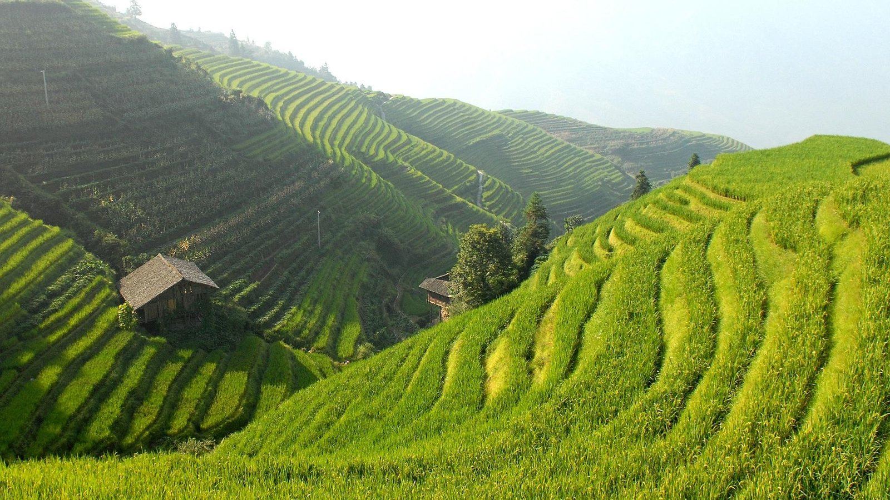

5man's Rice Trading is a rice business based in Davao City, Philippines. We supply good quality rice at a low price, with plenty of choices for homes, stores, kitchens, and distributors. Quality is a chain of careful decisions, and we handle every sack with the discipline bulk buyers rely on.

To serve good quality rice, at a low price, with a lot of choices.
To provide a quality of service that helps all consumers spend less time going outside when purchasing their daily needs.
What guides our business every day.
Clear prices and honest trade.
Only rice we are proud to sell.
Deliveries you can plan on.
We listen and support your needs.
Careful decisions from harvest to delivery.
We choose supply partners known for dependable grain and honest trade.
Appearance, consistency and condition are checked before rice goes out.
Clean storage and practical packing keep quality through delivery.
A simple path from inquiry to delivery.
Tell us the variety, volume, bag size and delivery schedule you need.
We confirm availability and send clear pricing.
Your rice is checked, packed and scheduled for dispatch.
We coordinate arrival and stay ready for your next order.
Rice farming is an important part of agriculture and the daily lives of Filipino families. Behind every sack of rice is the hard work of farmers who prepare the land, plant the seedlings, care for the crops, and harvest the grains. At 5man's Rice Trading, we value the effort that goes into producing rice and the journey it takes before it reaches our customers.
Rice production takes time, care, and dedication at every stage.
Farmers prepare and level the soil, making the field ready for planting and helping water spread evenly.
Rice seeds or young seedlings are planted in the field where they can grow and develop.
Farmers monitor water, nutrients, weeds, and pests to support healthy rice plants as they grow.
When the rice grains mature, they are harvested, dried, and prepared for milling and distribution.
Rice is more than food—it supports communities and livelihoods.
Rice is a staple food in many Filipino households and is part of everyday meals across the country.
Rice farming provides work and income for farmers and people involved in planting, harvesting, and processing.
Rice production and trading help connect farmers, millers, sellers, and consumers in local communities.
Responsible rice production and distribution help make rice available for families and businesses.
Good rice quality begins with proper care in the field and continues through drying, storage, and handling. Practices such as using water wisely, keeping fields healthy, managing pests carefully, and storing harvested grains in clean, dry conditions can help reduce waste and protect the quality of rice.
As a rice trading business, we understand that our role is part of a larger agricultural journey. We aim to provide customers with rice choices for their everyday needs while respecting the work of farmers and everyone involved in bringing rice from the field to the market. Our goal is to make buying rice convenient, dependable, and affordable for households, stores, and other customers.